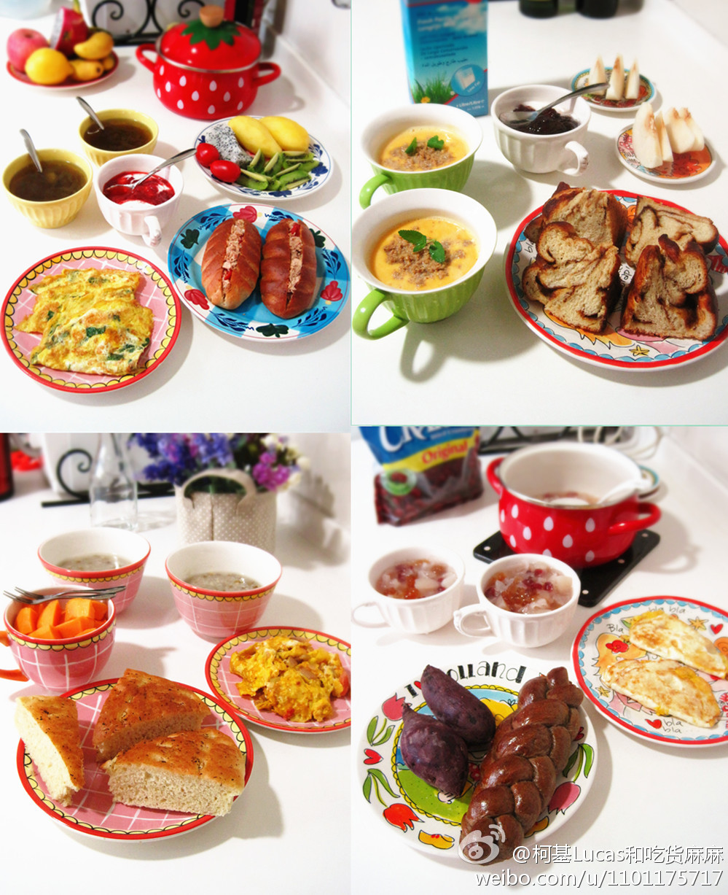
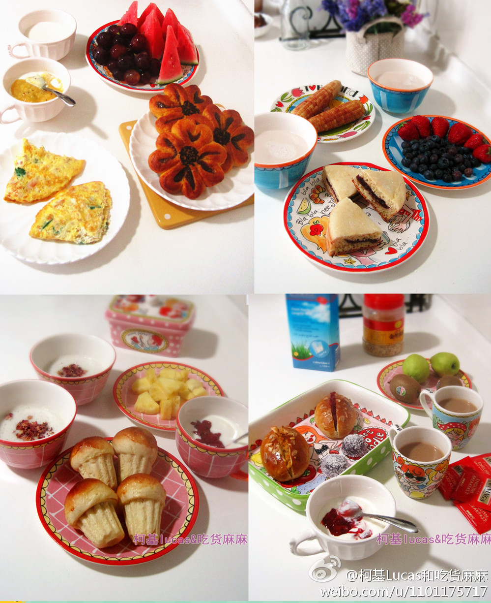
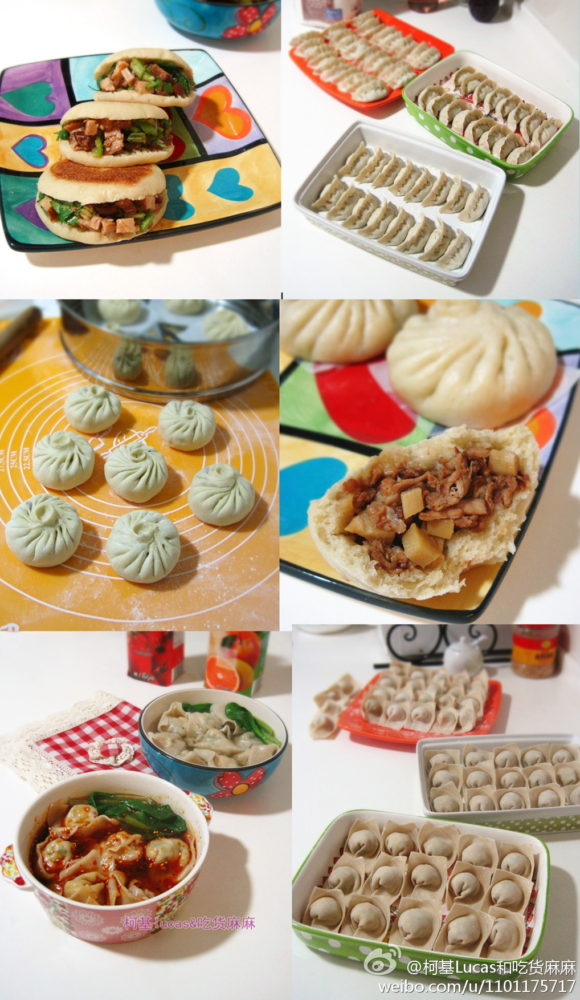
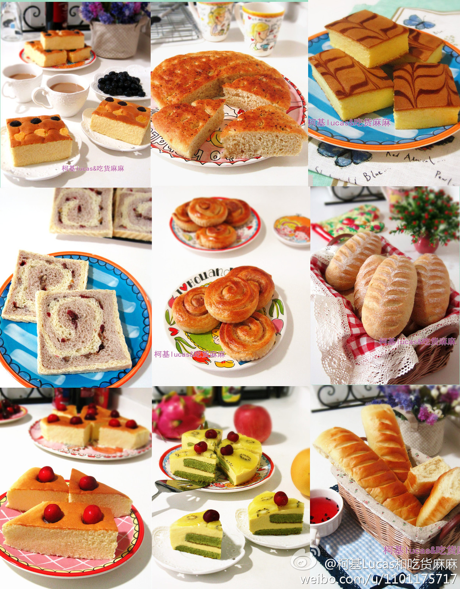

//@rcfans_:在上一家公司，三年来买工作用书（无定额）和旅游（定额）费用都是公司报销，连如何着装这种事都是公司公费培训；在现在这家公司，书费和培训费也是定额报销，客户甚至自己掏钱给我买了一本书寄过来。所以，凡事别一棍子下结论。@Ada李力:早年我刚外派到香港公司，工作时间看专业书籍，对老板说这是学习。老板当时就说:"你到这里的时间是工作，不是学习"。我于是知道，学习和提高的应该在八小时工作时间之外。工作时间内就是该为公司创造利润和价值的。— 这很赤裸裸，但都是实话。
确实是好诗。也许被冠以Teresa Mother的名义，让这首诗传播得更广。//@檀林_hootch:@李开复 这是著名的Ten Paradoxical Commandments by Dr. Keith written in 1968 应不是Mother Teresa //@王利芬:是的，别人怎么说嘴在别人身上，还是管好自已最重要，问心无愧最要紧。//@李开复: 这首诗告诉我们：@李开复:【特蕾莎修女的诗】特蕾莎修女（Mother Teresa of Calcutta）是世界著名的天主教慈善工作者，为印度的穷人提供接济救治，并提供临终关怀。因其一生奉献给解除贫困，于1979年得到诺贝尔和平奖。看了一首特蕾莎修女写的诗很有感触，分享一首给大家。
赞同。@登山踏雪:#马拉松#节目做得太枯燥，始终跟拍第一梯队，这有什么意思？无非让人对马拉松越来越敬而远之。多拍拍后面的人，看看那些快乐奔跑、色彩奔跑的人，他们才是马拉松的主力。别再追求有多少顶级选手参赛，别再追求出神马成绩，别再把运动搞得那么功利。
#社区运营# 欧文沙龙创始人张玉川说，数据显示，在中国，俱乐部(会所，社团)有80—90%是亏损的。做俱乐部的人需要有热情。— 我现在觉得，纯靠热情支撑的事儿，都会有些不靠谱。因为，热情没了怎么办? 我在这里:网页链接
#社区运营#要给服务人员工作的奔头。当年大学生曾以在麦当劳做实习为荣，除了薪资不错外，也跟当年麦当劳的相对消费金额高有关。当然，现在麦当劳没这吸引力了。---:抱歉，此微博已被作者删除。查看帮助： 网页链接
我是把#社区运营#当服务业看的，但在中国从事服务业的往往社会地位不高，而这个人群的自尊心即敏感又脆弱。《海底捞你学不会》中有个描述，来店消费的客人中，最喜欢摆谱和找茬的是别家餐馆的服务员，而且这些人还特别不愿意被认出是在干服务员工作。
//@爱开源的诺贝尔最佳贡献奖:老北京有“五子行”的说法，也就是厨子、戏子、跑堂子、叫花子、老妈子，理论上说除了叫花子都算是搞的服务业嘛。这些行当的人大家都看不起，所以我想这种对服务业鄙夷的态度也许就是从很早以前就开始了吧。有个朋友搞了8年开源软件服务，后来放弃了，其中就有这个原因@Ada李力:我是把#社区运营#当服务业看的，但在中国从事服务业的往往社会地位不高，而这个人群的自尊心即敏感又脆弱。《海底捞你学不会》中有个描述，来店消费的客人中，最喜欢摆谱和找茬的是别家餐馆的服务员，而且这些人还特别不愿意被认出是在干服务员工作。
//@齐宝玮:社区靠的人与人的关系不断升华产生粘性和价值，就像家庭，热情是会一直存在的，就像每个人都会对家庭有所懈怠，但家人不会放弃你，你终究会回到家里，你的热情也会持续，你也会给其他家人关爱。@Ada李力:#社区运营# 欧文沙龙创始人张玉川说，数据显示，在中国，俱乐部(会所，社团)有80—90%是亏损的。做俱乐部的人需要有热情。— 我现在觉得，纯靠热情支撑的事儿，都会有些不靠谱。因为，热情没了怎么办? 我在这里:网页链接
点击#HSG晒早餐#能看到很多早餐美图，西餐居多，大概西餐容易拍出漂亮图片。//@Holy-Sexy-Girl:全才啊！！！！！！@柯基Lucas和吃货麻麻:#hsg晒早餐# 不算最健康但各种中西主食、果酱酸奶全是自制滴。爱甜食就早上吃，保证早餐热量又不怕长肉，自己做不担心反式脂肪和添加剂。一般用金枪鱼煎蛋或夹面包，肉少了点；最近要多做全麦杂粮面包，增加蔬菜肉类，给努力中的肚子君和PP君加把力 @Holy-Sexy-Girl @人鱼线VS马甲线 